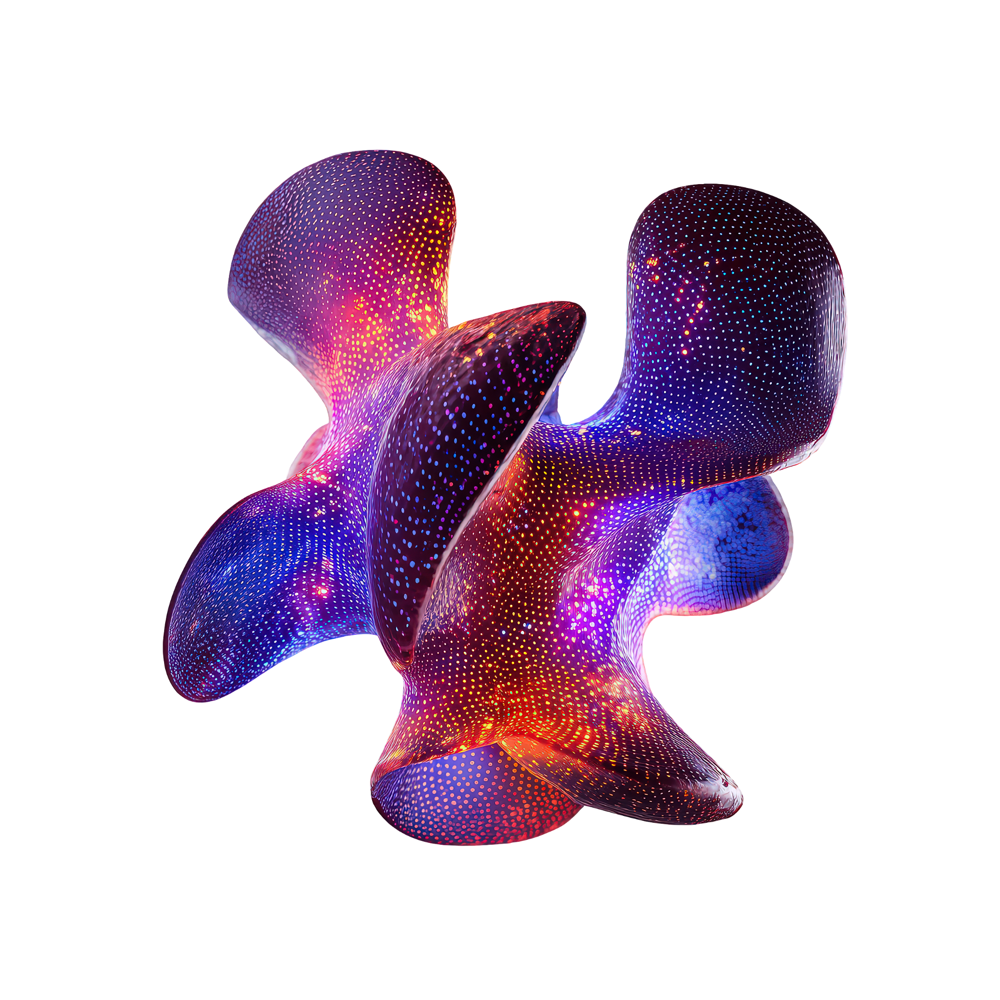

Where value actually bleeds.
Three mutually exhaustive traps.
Across upstream exploration, midstream pipelines, and downstream refining, every lost crore, delayed spud, and off-spec crude run resolves into three foundational failure modes.
Downhole MWD sensors and plant SCADA stream real-time physics. But routing raw data across email threads, manual format cleanups, and multi-tier approval chains creates massive latency.
Senior petrophysicists and geologists spend over 60% of their working lives on "work about work": hunting LAS files, reformatting ASCII columns, prepping morning slides, and hand-stitching curves.
Your enterprise sits on millions of feet of wireline logs and core assays trapped in proprietary formats. Because systems don't talk, geologists rely on personal memory, repeatedly making high-capital bets in the dark.
Look at the three mission-critical roles on your payroll where these micro-vulnerabilities extract their daily toll.